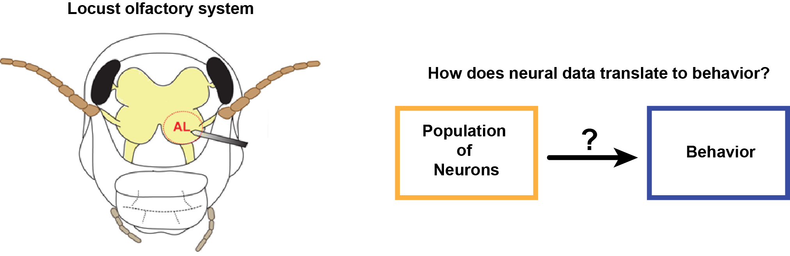

Adaptive computations in an olfactory circuit

One of the fundamental questions that still needs to be addressed in Neuroscience is how are the external stimuli represented at the neural level (i.e. Neural Coding) while still performing adaptive computations. Also, what features of adapted neural responses are relevant for behavior? In this study, I addressed these questions by examinig the data using statistical and machine learning techniques.
Click here to read more